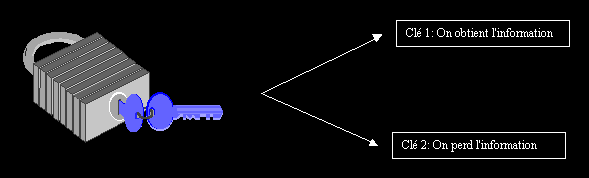
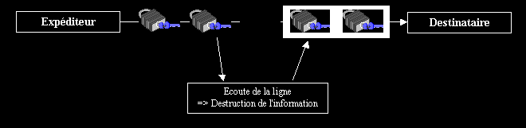
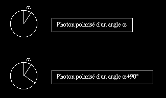
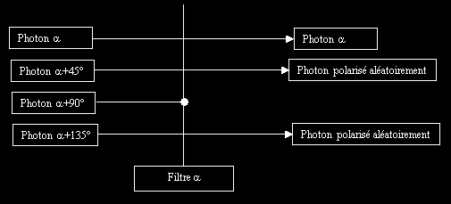
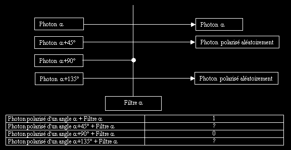
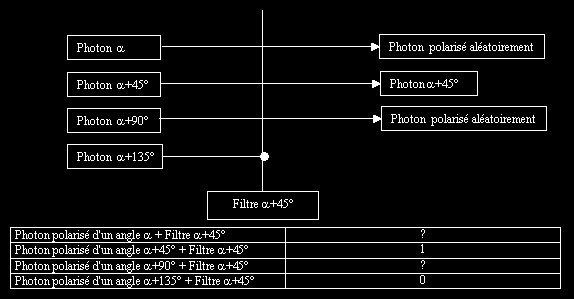
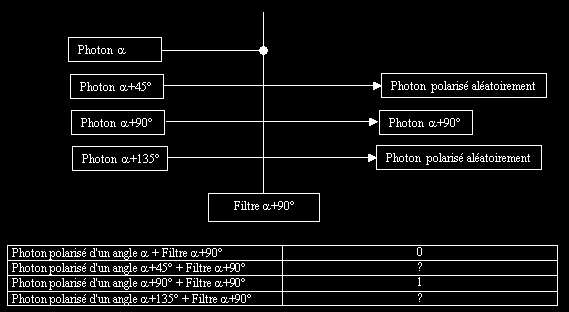
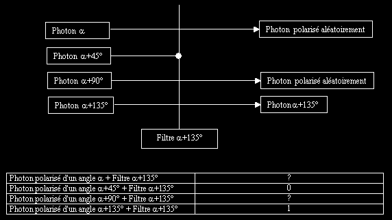
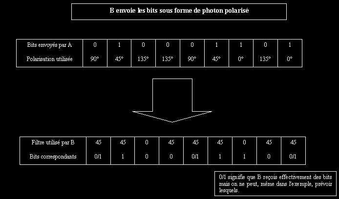
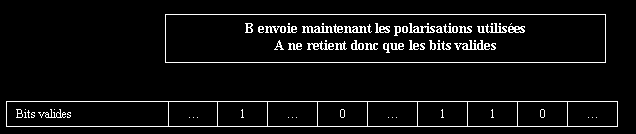

| Cryptographie quantique |
KERCKHOFFS: " Il ne faut pas compter dans un cryptosystème dont la résistance réside dans le fait que l'ennemi ne sache pas comment fonctionne l'algorithme."

ECHANGE DE CLE PARFAIT
OU
QU'EST CE QUE LA CRYPTOGRAPHIE
QUANTIQUE ?

I- MODELE D'ECHANGE THEORIQUE
II- LA CRYPTOGRAPHIE QUANTIQUE
1- NOTIONS ELEMENTAIRE DE MECANIQUE QUANTIQUE
2- RETROUVONS NOTRE SYSTEME BINAIRE…QUANTIQUE
3- PROTOCOLE DE D'ECHANGE
4- QU'EN EST IL EN PRATIQUE ?
Quel que soit le cryptosystème que vous utilisez, à un moment ou un autre, vous devez échanger des clés (on parle ici de clé privées). Elles sont véritablement la clé de voûte :) de la sécurité de vos échanges. Il existe de nombreux protocoles d'échanges (ressemblant un peu au RSA) mais le meilleurs protocoles d'échanges reste souvent la transmission en main propre.
Il existe toutefois un modèle théorique d'échange de clé. Ce modèle était, jusqu'à la découverte ces dernières années de la cryptographie quantique, un modèle purement théorique. Nous allons essayer d'appréhender ce modèle, puis pour les plus courageux nous verrons comment le traduire en "terme quantique".
I- MODELE D'ECHANGE THEORIQUE
Dans le monde actuel, si je vous envoie un message rien ne me dis que ce message n'a pas était capturé pour être copié (sniffing). Imaginons maintenant un protocole de transmission qui, lorsque vous recevez un paquet, à 1 chance sur 2 de donner la bonne information. On peut matérialiser le paquet par un coffre sur lequel est disposé 2 clés: si vous ouvrez le coffre avec la bonne clé alors vous disposerez de l'information, sinon l'information est totalement détruite.

Imaginons maintenant que je reçois de tels paquets en connaissant les clés à utiliser (nous verrons plus loin une condition plus restrictive car après tout on suppose ici avoir déjà échanger des clés ! le protocole exacte supprime ce point :). Si quelqu'un écoute votre ligne, il doit ouvrir les coffres et risque une fois sur deux de supprimer l'information contenue dans ces coffres. Ainsi, il ne pourra reconstituer le message et laissera une trace de son écoute. Cela suffit amplement pour interrompre l'échange des clés. On recommence une telle transmission tant que le canal est écouté.

On a donc bien un modèle d'échange théorique de clé. Reste bien sûr un gros problème, comment modéliser ces coffres ? Notre inquiétude est d'autant plus grande que nos bits 0 et 1 ne pourrons jamais modéliser un tel problème. En effet, on peut toujours garder une trace et recréer une information numérique. Il nous faut donc un nouveau support. C'est ici qu'intervient précisément le cryptographie quantique.
II- LA CRYPTOGRAPHIE QUANTIQUE
1- NOTIONS ELEMENTAIRE DE MECANIQUE QUANTIQUE
Le but de ce texte est avant tout une initiation à la cryptographie quantique. Je passerai donc sous silence les paramètres et les limitations de la physique quantique. Je rappelle l'essentiel partant du fait que vous ne connaissez rein à la physique quantique.
L'univers, le Terre, votre maison, votre ordinateur est constitué d'Atome ("indivisible" en grec), ces atomes représente le plus petit morceau de matière représentable. Les différents atomes qui existent s'échange de l'énergie (transfert thermique par exemple) à l'aide de particules. Une famille de ces particules sont appelées photons.
L'une des caractéristique d'un photon est sa polarisation. Si notre photon représente une antenne de voiture alors on pourrais dire que l'inclinaison de l'antenne est sa polarisation. La polarisation est une sorte d'angle d'inclinaison du photon. D'ailleurs, on donne la polarisation d'un photon en degré.

On a de même le photon polarisé selon un angle a +45° et a +135°. Il existe un appareil très utilisé en mécanique quantique: le filtre. Le filtre est un moyen pour récupérer des photons polarisés. Il à une propriété assez inattendu. Imaginons que je possède un filtre d'angle a : si j'envoie un photon polarisé d'un angle a alors le filtre le laisse passer, si j'envoie un photon d'un angle a +90° alors le filtre ne le laissera pas passer, si j'envoie un photon d'un angle a +45° (ou a +135°) alors, chose étrange, le filtre laissera passer le photon une fois sur deux . (Pour les curieux cette singularité est dut au principe d'incertitude d'Heisenberg).

2- RETROUVONS NOTRE SYSTEME BINAIRE…QUANTIQUE
Nos machines n'étant pas quantiques (pas encore :), nous devons traduire les considérations précédentes en terme de 0 et de 1.
| Photon polarisé d'un angle a ou a +45 |
1 |
| Photon polarisé d'un angle a +90 ou a +135 |
0 |
Lorsque vous recevez un train d'onde de photon (une paquet de photon polarisé), on peut distinguer 4 cas:
1er Cas: Vous utilisez un filtre a pour lire les photons

| Photon polarisé d'un angle a + Filtre a |
1 |
| Photon polarisé d'un angle a +45° + Filtre a |
? |
| Photon polarisé d'un angle a +90° + Filtre a |
0 |
| Photon polarisé d'un angle a +135° + Filtre a |
? |
2nd Cas: Vous utilisez un filtre a +45° pour lire les photons

| Photon polarisé d'un angle a + Filtre a +45° |
? |
| Photon polarisé d'un angle a +45° + Filtre a +45° |
1 |
| Photon polarisé d'un angle a +90° + Filtre a +45° |
? |
| Photon polarisé d'un angle a +135° + Filtre a +45° |
0 |
3eme Cas: Vous utilisez un filtre a +90° pour lire les photons

| Photon polarisé d'un angle a + Filtre a +90° |
0 |
| Photon polarisé d'un angle a +45° + Filtre a +90° |
? |
| Photon polarisé d'un angle a +90° + Filtre a +90° |
1 |
| Photon polarisé d'un angle a +135° + Filtre a +90° |
? |
4eme Cas: Vous utilisez un filtre a +135° pour lire les photons

| Photon polarisé d'un angle a + Filtre a +135° |
? |
| Photon polarisé d'un angle a +45° + Filtre a +135° |
0 |
| Photon polarisé d'un angle a +90° + Filtre a +135° |
? |
| Photon polarisé d'un angle a +135° + Filtre a +135° |
1 |
On retrouve donc un nouveau système binaire. On peut meme le qualifier de système ternaire car on dispose d'un type de bit inédit: ? qui représente un bit aléatoire. On comprend mieux notre système de cofre présentait au début: nos filtres seront nos clés. On ne diposera pas de 2 clés pour ouvrir le cofre mais de 4. On remarque aussi que les cas 1 et 3 sont symétriques, tout comme les cas 2 et 4.
3- PROTOCOLE DE D'ECHANGE
On suppose A et B deux utilisateurs volant s'échanger 2 clés. C un pirate voulant intersepter cette clé. Le canal est une fibre optique permettant d'utiliser les techniques de cryptographie quantique.
A envoie à B une suite de photon polarisé suivant a , a +45°, a +90° ou a +135°. B ne connaît pas, à priori, la polarisation des photons, il utilise aléatoirement un filtre a ou a +45°. Il récupère ainsi une succession de photon donc un code binaire. Bien sûr, étant donné le caractère quantique de ces informations, il y a en moyenne 1 bit sur 2 de faux (aléatoire).
A donne ensuite à B, la polarisation des photons envoyés: si elle était rectiligne (a ) ou transversale (a +45°). B sait donc maintenant quels sont les bits véritablement découverts. Au terme de ce protocole, A et B ont quelques bits en commun.
Exemple:


Si la ligne a été écouté par C. Alors C a une fois sur deux sacrifié un photon et une fois sur deux renvoyé un photon de manière incorrecte. Ainsi, il n'a renvoyé qu'une fois sur 4 un photon valide. C'est pourquoi, B envoie environ un quart des bits valides à A. A les compare et si un seul de ces bits est différent alors la transmission est romptu. C est donc inévitablement repéré.
Ce protocole se nomme protocole de Bennett/Brassard. Il constitue le protocole le plus réalisable matériellement.
4- QU'EN EST IL EN PRATIQUE ?
Dans la pratique, le plus difficile est de séparé les photons et ensuite de les transmettre sur plusieurs kilomètre de fibre optique. Actuellement, la cryptographie quantique n'est réalisable qu'en laboratoire. Des tests des grandeurs natures sont réalisés sur des fibres optiques de plusieurs kilomètres mais jamais beaucoup plus. On peut prévoir dans 10 ans un développement plus sérieux de transmissions basés sur la cryptographie quantique. Dans ce cas, une attaque par sniffing ne serait plus praticable.
Certains chercheurs s'orientent vers d'autres type de mode de transport pour représenter les fameux "coffres" à plusieurs clés. Mais la recherches n'est qu'à ses balbucimant dans ce domaine. La cryptographie classique à encore de beau jour devant elle :-)
version 1.0
Pour toutes questions, commentaires, critiques, erreurs: sabrina@inorbit.com